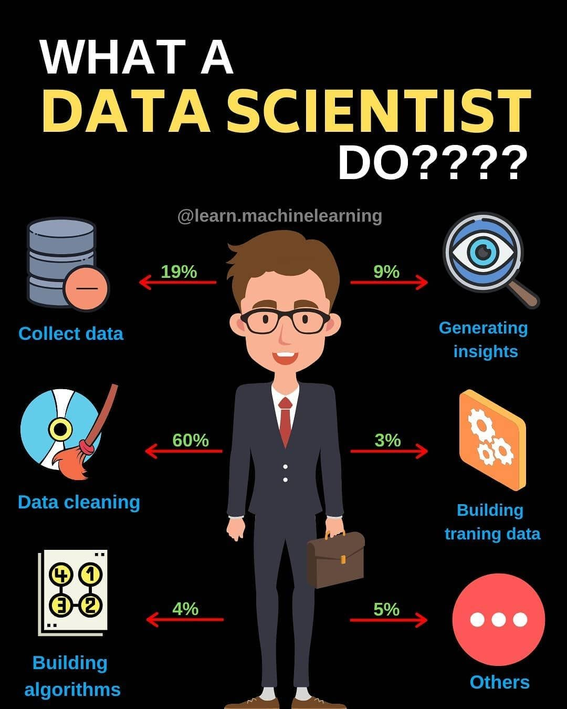
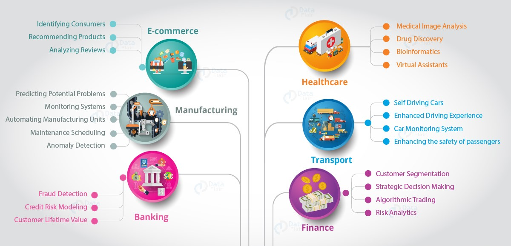

What is Data Science?
Data Science is an interdisciplinary field that combines statistics, computer science, and domain knowledge to extract insights and knowledge from structured and unstructured data. It is a powerful tool that enables businesses to make data-driven decisions and solve complex problems.
Data Science LifeCycle
The data science lifecycle involves various roles, tools, and processes, which enables analysts to glean actionable insights. Typically, a data science project undergoes the following stages:
|

|
What does a data scientist do?
|  |
A data scientist collects, analyzes, and interprets big data to uncover patterns and insights, make predictions, and create actionable plans. Big data can be defined as datasets that have greater variety, volume, and velocity than earlier methods of data management were equipped to handle. Data scientists work with many types of big data, including:
Additionally, the characteristics of the dataset can be described as quantitative, structured numerical data, or qualitative or categorical data, which is not represented through numerical values and can be grouped based on categories. It's important for data scientists to know the type of data they're working with, as it directly impacts the type of analyses they perform and the types of graphs they can use to visualize the data |
Why is Data Science Important?
Data science is essential because it enables organizations to analyze vast amounts of data, extract meaningful insights, and make data-driven decisions that enhance efficiency and innovation. In e-commerce, it powers personalized recommendations and dynamic pricing; in healthcare, it improves patient outcomes through predictive analytics and personalized medicine; and in medical research, it accelerates breakthroughs in drug discovery and genome analysis. By transforming raw data into actionable knowledge, data science drives progress across industries, making it a cornerstone of modern technology and business strategies
Data science is very important because it enables organizations and industries to make data-driven decisions, uncover trends, and optimize processes for better outcomes. By analyzing vast datasets, it provides actionable insights that help in solving complex problems, improving efficiency, and driving innovation. Its transformative impact is evident across various sectors, enhancing productivity, customer satisfaction, and overall performance.
Some of the Industries like following will have great benefits:
- Manufacturing Industry: Data science improves production efficiency by predicting equipment failures through predictive maintenance, ensuring smoother operations. It also enhances quality control by analyzing data from production lines to identify defects and inefficiencies, leading to reduced costs and higher product standards.
- E-commerce: By leveraging customer data, it powers personalized product recommendations, increasing sales and customer loyalty. Additionally, it uses dynamic pricing models and targeted marketing strategies to maximize revenue while improving the shopping experience.
- Artificial Intelligence (AI): Data science serves as the foundation for AI technologies, enabling systems to learn from data, recognize patterns, and make accurate predictions. This accelerates advancements in automation, speech recognition, computer vision, and more, revolutionizing industries globally.
Organizations rely on data-driven decisions to stay competitive. Data science helps businesses understand customer needs, optimize processes, and develop smarter products.
